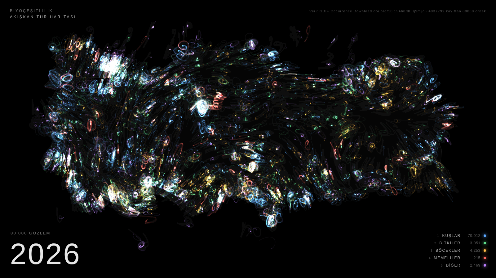
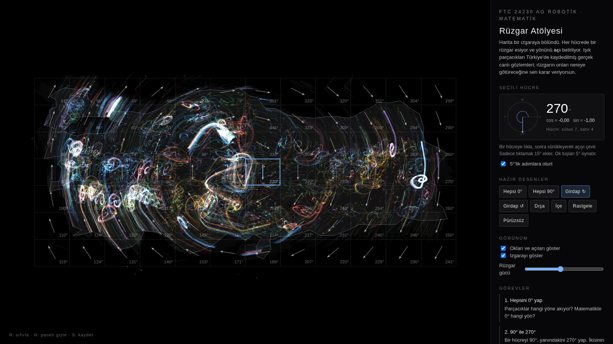

Sergi
Akışkan Tür Haritası
Her gözlem bir parçacık. Doğar, görünmez bir rüzgara kapılır, iz bırakır ve söner. Renk canlının ailesi, parlaklık yoğunluk. Zaman yıl yıl akar; ses de veriden üretilir. Karanlık bir duvara yansıtmak için.
Sergiyi aç →
Matematik atölyesi · 7. sınıf
Rüzgar Atölyesi
Harita bir ızgaraya bölünür; her hücreye bir açı verirsin, gerçek gözlemler o rüzgara kapılır. Açıölçer, cos ve sin, hazır desenler, beş görev ve adım adım öğretici.
Atölyeyi aç →